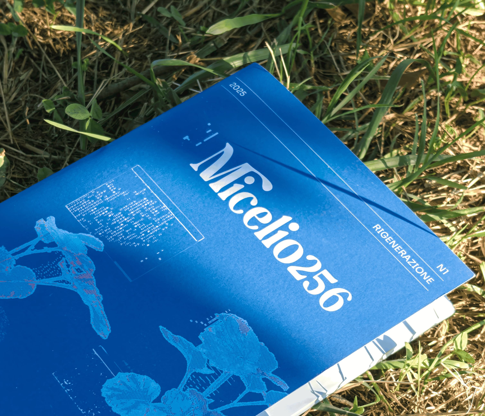
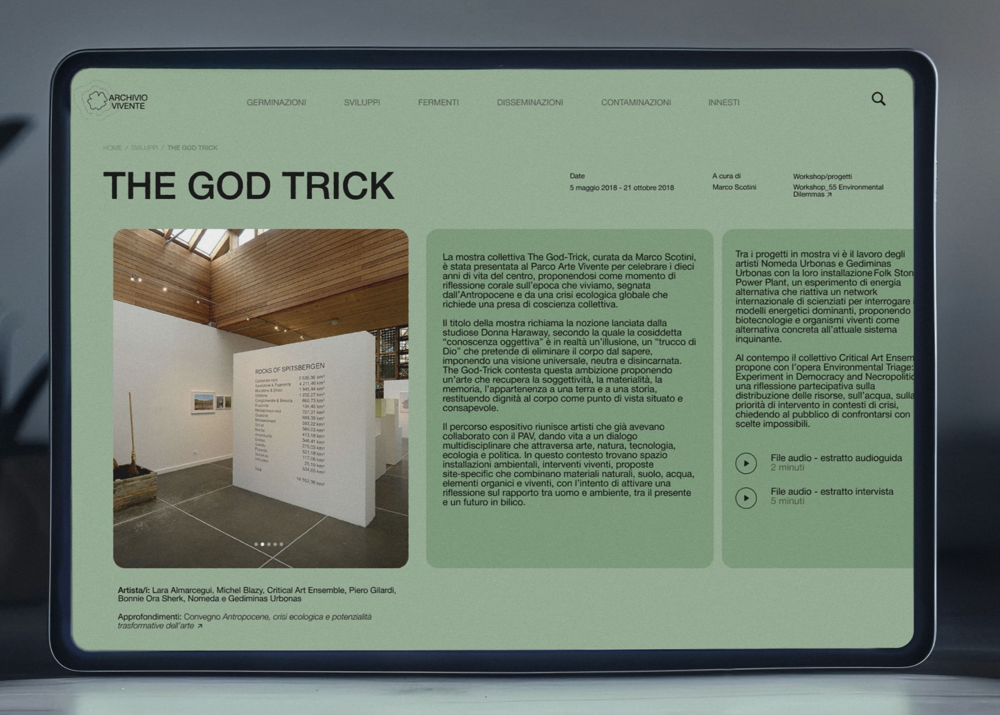
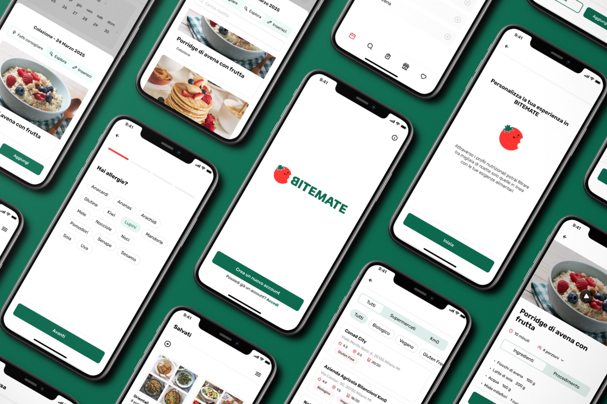
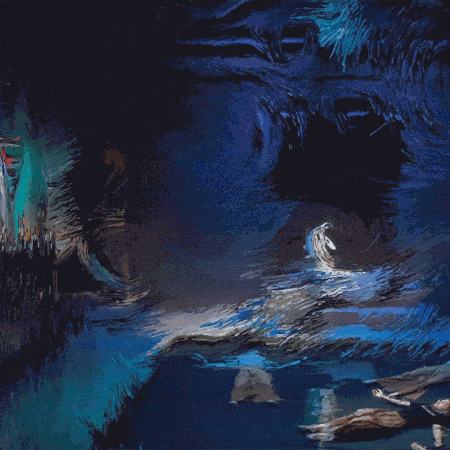
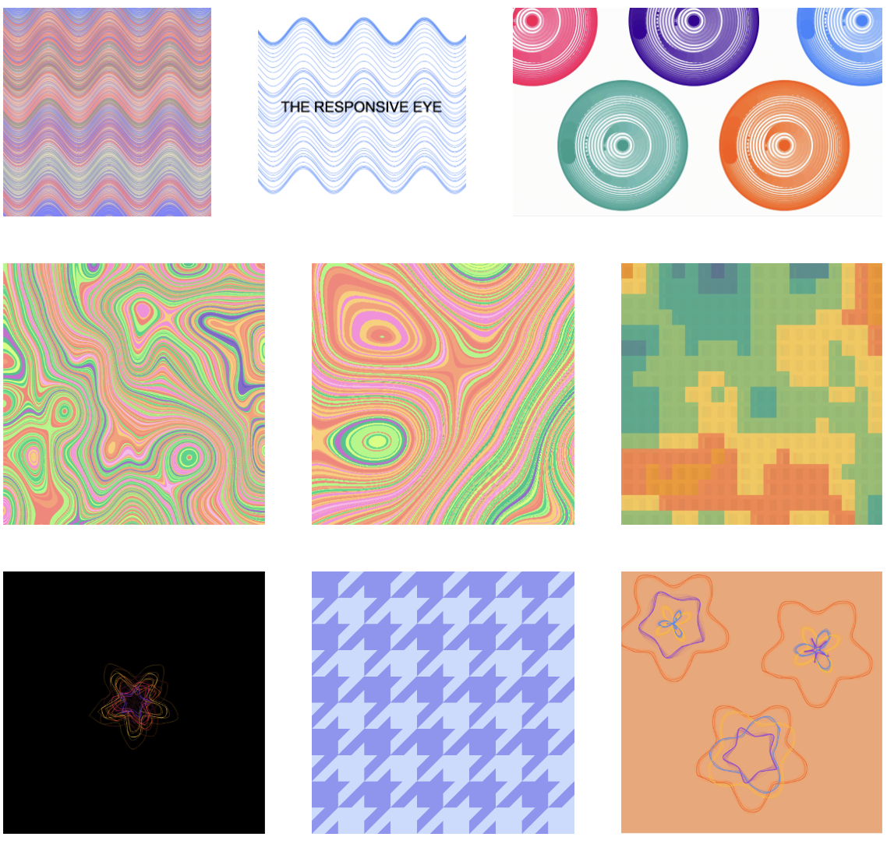
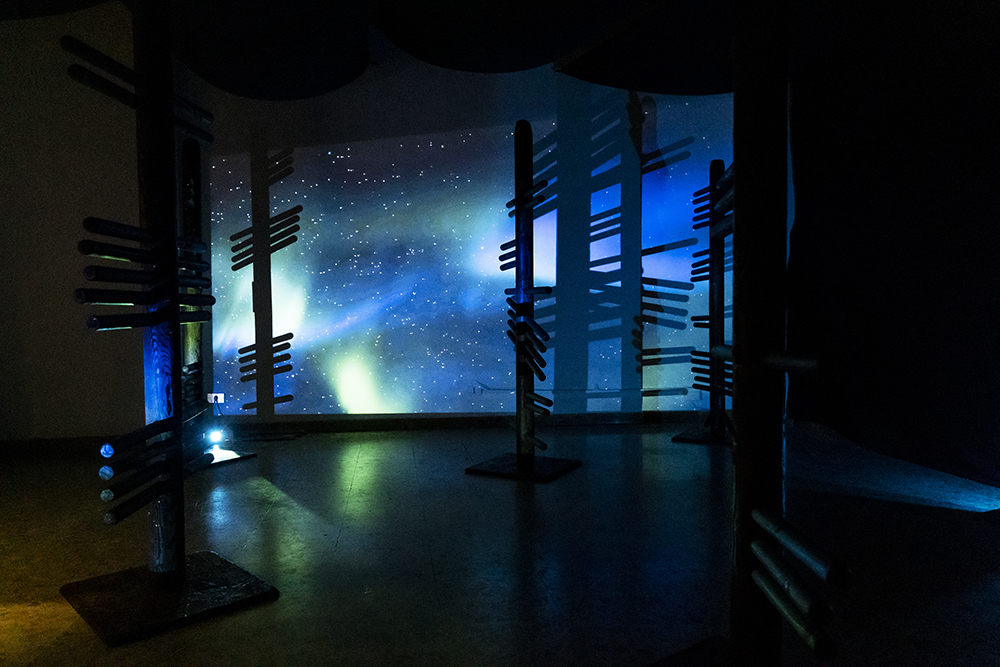

Micelio256 | Digital & Editorial
Art direction · Editoria · Design · Comunicazione
Micelio256 è un progetto editoriale, digitale e curatoriale indipendente, di cui sono fondatrice e curo la direzione artistica e la comunicazione. Prende forma sia in digitale, attraverso social, sito web e newsletter, sia in formato cartaceo attraverso una zine frutto di una rete di creazione collettiva, distribuita nel 2025 in vari spazi artistici tra Torino e Venezia.
Torino-Venezia, 2025
Progetto di tesi
✺

ARCHIVIO VIVENTE | Web project
UX research · Web design · Sviluppo web
Progettazione e sviluppo di una piattaforma web interattiva per la documentazione e diffusione di mostre artistiche. Il progetto consiste in un catalogo digitale modulare che preserva le mostre e i relativi contenuti attraverso approfondimenti e narrazioni contestuali, con particolare attenzione all'esperienza utente e all'accessibilità.
Torino, 2025/6
Parco Arte Vivente di Torino
⌘

BiteMate | APP
UX research & design · APP
Bitemate è un'app di meal planning plant-based che aiuta le persone a pianificare i pasti in base alle proprie esigenze nutrizionali. Consente di ottimizzare il tempo e ridurre lo spreco alimentare, facendo la spesa in modo veloce, consapevole e sostenibile.
Milano, 2025
Talent Garden
⧉

Musee | APP
UI design · APP
Musee è un'app dedicata alla fruizione culturale. Consente di visualizzare gli eventi e le mostre dei musei nelle vicinanze, offrendo una panoramica aggiornata delle attività disponibili sul territorio.
Milano, 2025
Talent Garden
⧉

POLARIZE | Web project
Web design · Sviluppo web · Creative Coding
POLARIZE è un progetto web sperimentale di arte generativa, concepito come una galleria di percorsi visivi interattivi. Il progetto utilizza librerie javascript Processing e p5.js per la manipolazione in tempo reale di visual, testi, suoni e immagini.
Torino, 2022
Festival dell'acqua
⌘

Sketchbook | Creative Coding
P5.js · Touchdesigner
Raccolta di visual generativi creati attraverso il coding con p5.js e Touchdesigner.
Torino, 2024
Tirocinio Mekit studio
⌘

Adrift | Interactive installation
Arduino · Interaction · Audio-video
L'installazione propone un'esperienza immersiva e riflessiva attorno alla laguna come luogo di memoria, instabilità e trasformazione. Utilizza Arduino e sensori ultrasuoni per reagire alla presenza di fruitori nello spazio.
Venezia, 2025
Art Night, OPEN!
⸙

A-Void | Art installation
Installazione multimediale · Audio-video · Mostra
Delle fievoli luci proiettate su strutture in legno illuminano una stanza completamente dominata dalla natura. A-Void è il ritorno delle lucciole, una foresta di simboli che evoca una dimensione alternativa al dinamismo della contemporaneità.
Torino, 2023
PARATISSIMA x untraitdunion
⸙

In Balia delle Stelle | Art installation
Installazione · Natura · Residenza
In Balia delle Stelle è un'installazione site-specific realizzata durante una residenza artistica in una foresta estone. L'opera si compone di due elementi: una struttura sospesa, composta di piante e oggetti tecnologici dismessi, e una seconda parte ancorata a un tronco, con schermi sovrapposti in cui vivono sistemi fungini e muschio.
Estonia, 2022
Art residency
⸙